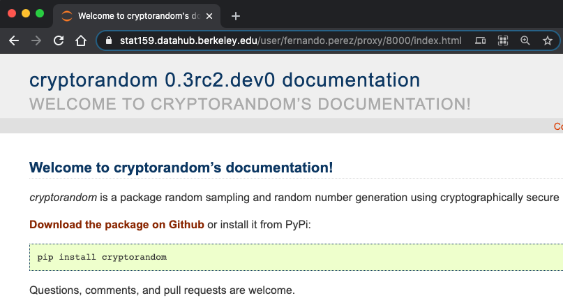

Some tips for HW06¶
These notes should help you work through some of the issues we discussed in lecture today, regarding how to render the sphinx documentation for cryptorandom in the hub, and how to then view your own build of these docs through the hub.
Basically we need to solve the following problems:
We need to ensure that pytest, Sphinx and other tools find and use our in-development version of
cryptorandominstead of the system-wide one, so our new work is reflected in the tests and documentation we create.We need to be able to build the documentation on JupyterHub and view the resulting docs online easily, through the Hub.
Credit and huge thanks to Yuvi Panda from the JupyterHub/Berkeley team for his help navigating the proxy issues detailed below.
Install cryptorandom locally in development mode¶
The first issue we must solve is for Sphinx to find the version of cryptorandom that you are working on, rather than the installed one. This manifests itself immediately as the AttributeError you see regarding a missing __version__ attribute when trying to build the docs, but even if you fix that with a quick hack as I did in lecture, you’ll still have a problem. The issue is that the docs will import the system-wide installed version of cryptorandom, and not your local development copy. So any new docstrings or function signatures you edit will not be correctly reflected in the resulting docs.
The solution is to install your working copy as a development version, also known as an “editable install” (hence the -e command line argument, short for --editable). We now explain how to do this, and you can find more details in the pip documentation.
In the top-level of the cryptorandom directory, where the file setup.py lives, run the command:
pip install -e .
You should see something like the following output (with your own user name in the path):
jovyan@jupyter-fernando-2eperez:~/cryptorandom$ pip install -e .
Obtaining file:///home/jovyan/cryptorandom
Requirement already satisfied: numpy>=1.20 in /opt/conda/lib/python3.8/site-packages (from cryptorandom==0.3rc2.dev0) (1.20.1)
Requirement already satisfied: scipy>=1.6 in /opt/conda/lib/python3.8/site-packages (from cryptorandom==0.3rc2.dev0) (1.6.0)
Installing collected packages: cryptorandom
Attempting uninstall: cryptorandom
Found existing installation: cryptorandom 0.2
Uninstalling cryptorandom-0.2:
Successfully uninstalled cryptorandom-0.2
Running setup.py develop for cryptorandom
Successfully installed cryptorandom
Check that you got it right by doing the following:
cd doc/
python -c "import cryptorandom as cr;print(cr.__version__)"
You should see:
jovyan@jupyter-fernando-2eperez:~/cryptorandom$ cd doc/
jovyan@jupyter-fernando-2eperez:~/cryptorandom/doc$ python -c "import cryptorandom as cr;print(cr.__version__)"
0.3rc2.dev0
Set up the Sphinx build for JupyterHub-hosted viewing¶
Now we turn to the second problem: once we build our docs with Sphinx against our development version, how do we look at the built HTML results? These files are hosted in the Hub, not our home computer, so we can’t easily view them immediately. While JupyterLab can display individual HTML files, this will not show a fully styled version with all the necessary extra assets such as images, CSS, etc. We need to use a full web server for that, and we need to be able to access that web server from outside the Hub. We now explain how to achieve this.
First, you need to make a change to conf.py so that the build can be seen through a JupyterHub installation. This change can probably go into cryptorandom proper in the end, but for now we suggest you make it directly into the team repo in a single commit, that all team members then pull from, so you all have it in one place. You need to add three lines below - the comment is there in the file already, around line 108, and we leave it here for ease of reference. You neeed to add the code starting with import os:
# -- Options for HTML output ----------------------------------------------
import os
if "JUPYTERHUB_SERVICE_PREFIX" in os.environ:
html_baseurl = f'{os.environ["JUPYTERHUB_SERVICE_PREFIX"]}/proxy/absolute/8000'
Just to make sure these changes apply everywhere, in the doc/ directory run make clean once after the above, and then continue with the below. In what follows you may want to keep at least two terminals open, one where you keep running the HTML Sphinx build, and one to run the server to check your builds (some might keep a third open in the top-level directory for git work, commits, pushes, etc). Take advantage of JupyterLab’s ability to lay them out in whatever way you find most visually convenient!
Once you make these changes you should commit and push them to the team repo, and all members need to ensure they pull from that correctly and they all have the same conf.py.
Editing the docs and testing your build¶
Make your edits and run make html in the doc/ directory. To check your build, then go to your other terminal (if you chose to have more than one) and go to the build/html subdirectory. There, run:
python -m http.server
as we saw today in class. This will print a message like:
jovyan@jupyter-fernando-2eperez:~/cryptorandom/doc/build/html$ python -m http.server
Serving HTTP on 0.0.0.0 port 8000 (http://0.0.0.0:8000/) ...
but you can not access http://0.0.0.0:8000 as we explained today in class, as on your home computer that would correspond to a local port. Instead you need to reach that port but on the Stat159 DataHub!
In order to support that, the Hub runs what is called a proxy service, that basically hooks up port 8000 on the Hub service to a publicly available path on the internet, so that you can see that internal port from your home computer.
The file you are trying to reach is index.html at the doc/build/html directory, being served on port 8000 on the server. To access that file from home, instead you tell your laptop to go to:
https://stat159.datahub.berkeley.edu/user-redirect/proxy/8000/index.html
(if you had configured the python HTTP server to use a different port than 8000 you’d change that number, and similarly if the name of the file you wanted to look at was different you’d adjust the path).
That URL will automatically change to a different one, with your username, and should show you the build of the docs. This is what that looks like for me when it’s all running:

As a side note, you may want to explore using sphinx-autobuild, a tool that automatically builds and reloads your Sphinx docs as you make changes. I haven’t personally tested it yet but it looks interesting, it is developed by the same team from the Executable Books project that builds JupyterBook.
Development workfow¶
You can now keep the Python HTTP server running, and continue a cycle of making edits, running make html in the doc/ directory, and checking the resulting HTML until it is to your liking.
Once you’re happy, commit, push, make PRs, and communicate happily with your team on your progress!